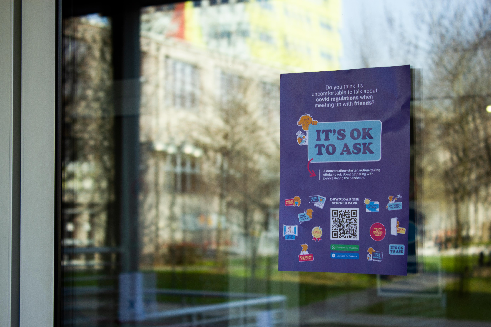

It's Ok to Ask
Project
It's Ok to Ask is a conversation-starter, action-taking sticker set for Telegram and WhatsApp, whose aim is to trigger a conversation about social gathering behaviors in times of COVID-19. This sticker set conveys visually and in a lighter way questions and issues that people might hesitate to ask.
Role
Team
Project website ⬈ Keynote presentation ◉
Concept, research, copywriting, voice-acting, presentation design.
Team
by André Calderolli, Marco Gabriele, Alessandro Parca, Andrea Silvano & Priscila Yoshihara
Project website ⬈ Keynote presentation ◉
